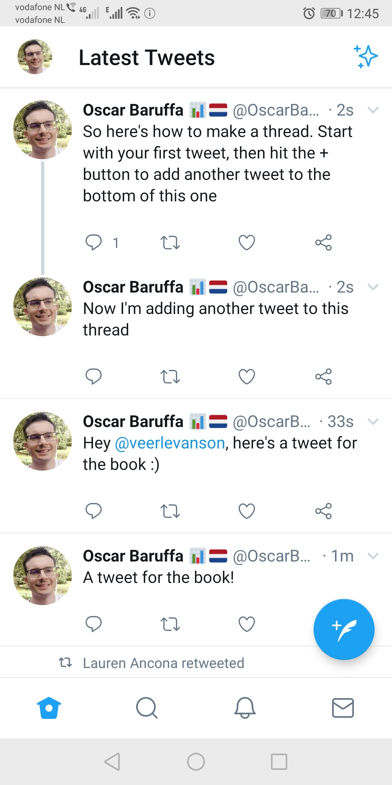

6 How threads work
Tweet threads are one of the little gems of this microblogging platform. A thread is just a string of tweets all linked together by the author and will relet to a topic in some way. Here’s how a thread shows up in you feed.
When composing a thread, usually people indicate thsi by startign it with [Thread] or 1/n or some other way to highlight it’s a thread.


People can reply to any of the tweets in a thread which starts a mini offshoot thread. This can become a bit confusing if you want to see all replies to a thread, and we bascically have to live with it until Twitter finds a way to make this more intuitive.